Factorio — Руководство пользователя
Факторинг счетов — от начала до конца
Сформировано 2026-07-16 · Доступно на factorio.co.uk
Factorio — это маркетплейс факторинга (финансирования счетов). Компании продают свои неоплаченные счета и получают деньги сегодня; инвесторы финансируют эти счета ради краткосрочного дохода, обеспеченного активами. Это руководство показывает каждый экран — публичный сайт и инвесторское приложение — по одному экрану на слайд.
Обзор
Что такое Factorio
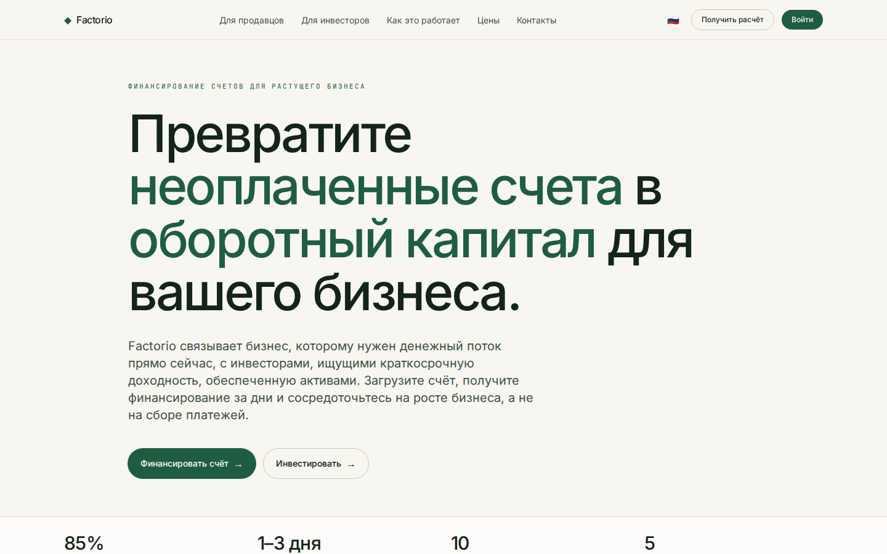
- Маркетплейс факторинга, соединяющий две стороны: продавцов, которым нужны деньги сейчас, и инвесторов, ищущих краткосрочный доход, обеспеченный активами.
- Один сайт обслуживает обе стороны — маркетинговую витрину и приложение на HTMX.
- Первый экран отражает модель: ставку аванса, срок финансирования, отрасли и общий объём финансирования (UZS).
- Полностью трёхъязычный — английский, узбекский и русский — переключается в верхней навигации.
Для продавцов
Превратите счета в оборотный капитал
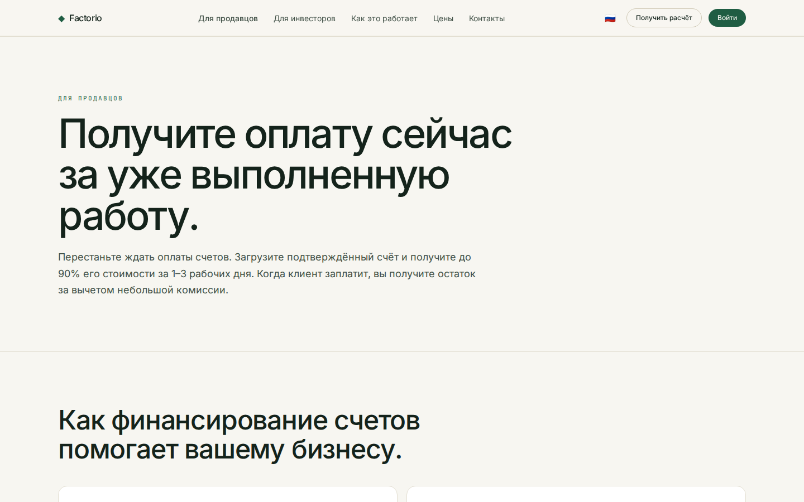
- Получите значительную часть суммы счёта авансом за несколько дней вместо ожидания оплаты 30–120 дней.
- Путь продавца: подать счёт → проверка и присвоение рейтинга риска → получение аванса → расчёт после оплаты должником.
- Это факторинг, а не кредит — без новой задолженности; финансирование растёт вместе с продажами.
- Создано для производства, оптовой торговли, строительства, логистики и услуг.
Для инвесторов
Краткосрочный доход, обеспеченный активами
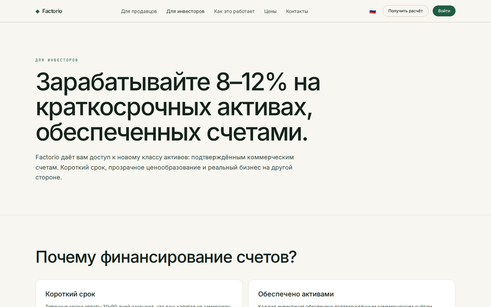
- Финансируйте проверенные счета и получайте доход за короткий срок — часто всего несколько недель.
- Диверсификация по должникам, отраслям и рейтингам риска (A–D).
- Доход привязан к реальной дебиторской задолженности, а не к рыночным спекуляциям.
- Ведёт в инвесторское приложение — дашборд, маркетплейс и портфель.
Как это работает
Четыре шага, от начала до конца
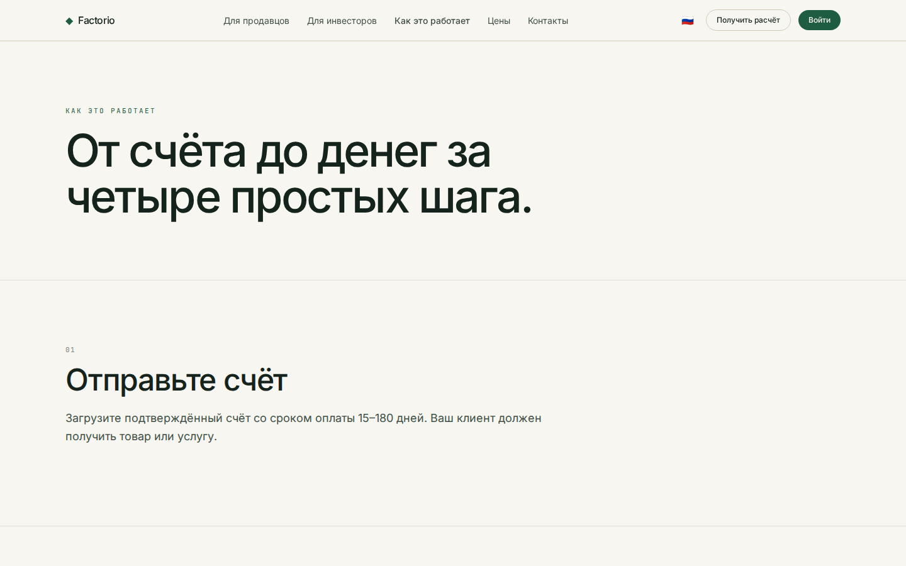
- Подача — продавец загружает счёт и данные компании.
- Проверка — Factorio проверяет должника и присваивает рейтинг риска и цену.
- Финансирование — счёт появляется на маркетплейсе; инвесторы финансируют его до цели.
- Расчёт — после оплаты должником распределяются основная сумма и проценты, позиция закрывается.
Как движутся деньги
Откуда каждая сторона получает деньги

Поток денег и платежей — продавец, плательщик, платформа, капитал
- Продавец поставляет товар и выставляет э-счёт в SoliqOnline; плательщик (дебитор) должен сумму счёта.
- Платформа выдаёт продавцу ~85% сразу, за счёт источника капитала — баланса банка, инвесторов или SPV в DIFC.
- В срок плательщик платит 100% на счёт сбора; продавец получает остаток, источник капитала — основную сумму и доход, платформа удерживает комиссию за объём.
- Поток одинаков независимо от того, кто финансирует — именно поэтому слой инвесторов / SPV подключаемый.
Путь · Заёмщик (origination)
Путь продавца, от начала до конца

От регистрации до аванса за 24–48 часов
- Регистрация (KYC банка) → счёт импортируется из SoliqOnline → запрос финансирования в чате AI-триажа.
- Скоринг дебитора возвращает индикативные условия; банк одобряет в один клик; залог регистрируется в ЦБ менее чем за час.
- Аванс поступает на счёт продавца за 24–48 часов — без визита в отделение и без бумаг.
Путь · Инвестор
Путь инвестора, от начала до конца

От онбординга до распределения дохода
- Онбординг (KYC / аккредитация) → внесение капитала через маркетплейс или SPV → автоинвест или выбор счетов.
- Позиция удерживается с AI-отчётностью по запросу; когда дебитор платит в срок, распределяются основная сумма и доход.
- Декомпозируемо: часть origination (за счёт банка) можно запустить первой; маркетплейс инвесторов и SPV подключаются позже, независимо.
Тарифы
Прозрачные тарифы за каждый счёт
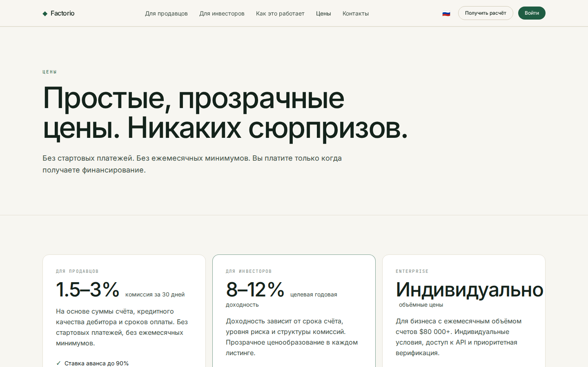
- Тариф рассчитывается за каждый счёт — комиссия за 30 дней от суммы аванса, без скрытых платежей.
- Показаны базовая ставка аванса и наглядный пример расчёта.
- Без подписки и без обязательств при подаче счёта.
- Понятная разбивка, чтобы обе стороны видели доход и стоимость.
Контакты
Связаться с нами
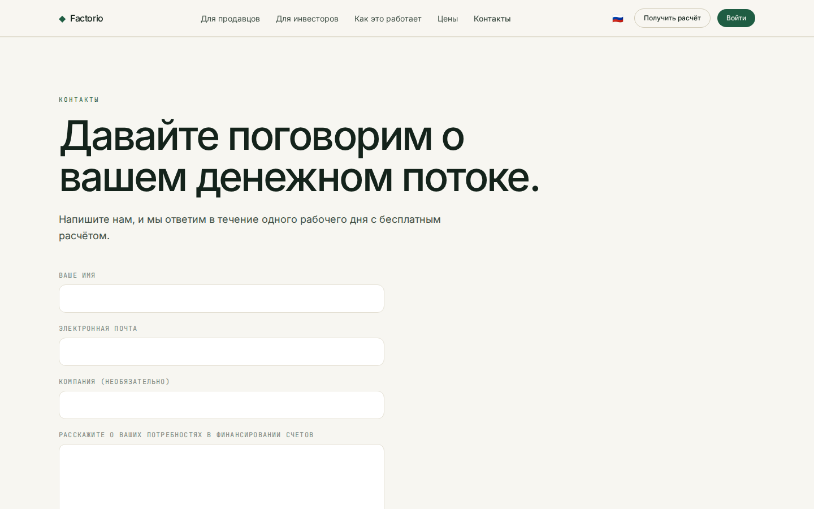
- Страница контактов для продавцов и инвесторов, чтобы связаться с командой Factorio.
- Показаны контактный e-mail и простая форма обращения.
- Точка входа для начала подключения.
Приложение · Дашборд
Ваш персональный обзор
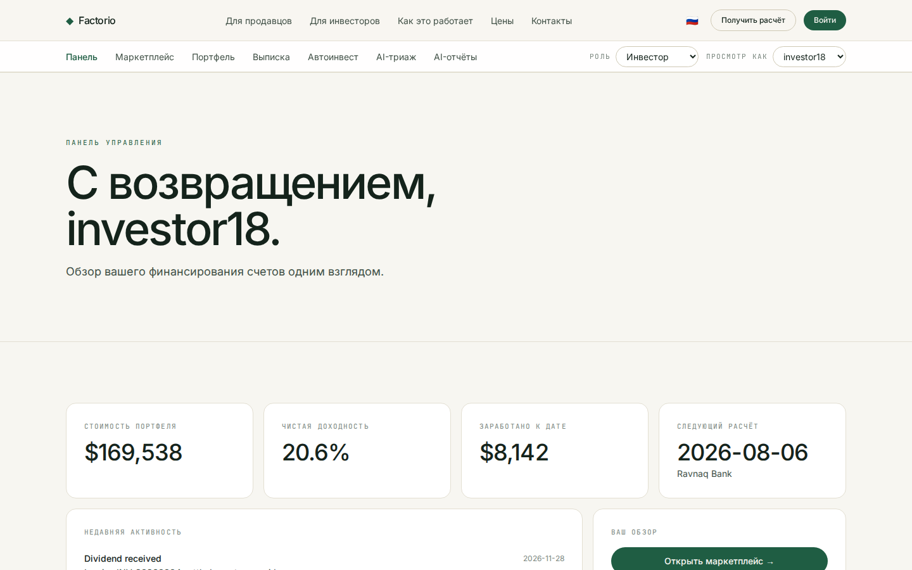
- Главная
/app приветствует текущего инвестора и показывает его KPI: стоимость портфеля, чистую годовую доходность, заработанное и ближайший расчёт.
- Лента активности отражает уведомления — финансирования, расчёты и обновления.
- Быстрые действия ведут в маркетплейс, портфель и выписку.
- Общая статистика платформы вынесена во вторичную полосу.
- Переключатель инвестора справа вверху позволяет смотреть приложение от лица любого инвестора (демо, без пароля).
Приложение · Маркетплейс
Просмотр счетов для финансирования
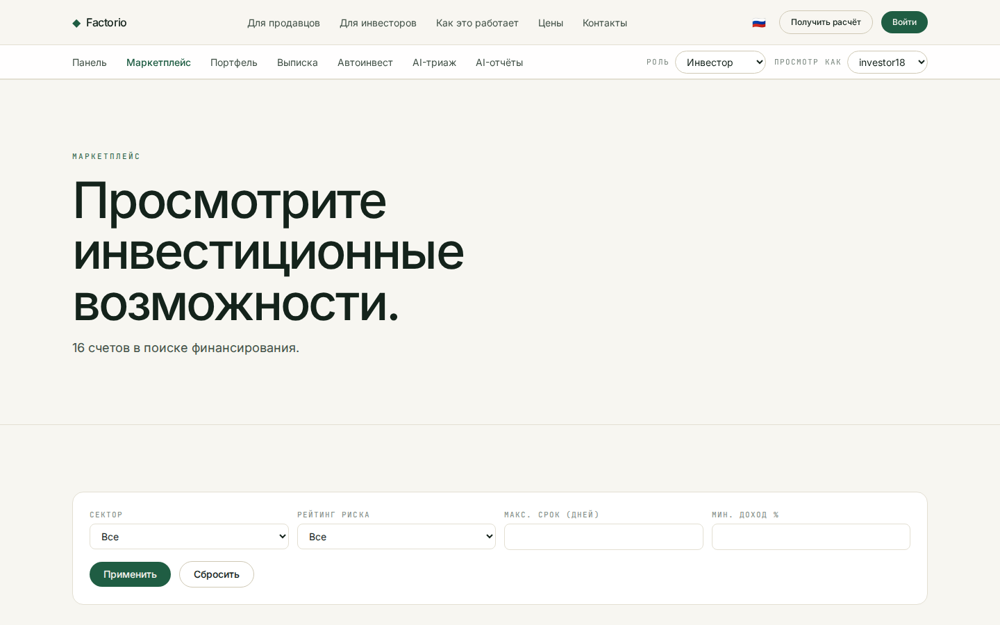
- Каждый открытый счёт — это карточка: должник, отрасль, рейтинг риска, сумма и шкала прогресса финансирования.
- На карточке видны ключевые показатели — ставка аванса, комиссия за 30 дней и ожидаемая доходность — а также срок удержания в днях.
- Панель фильтров сужает выбор по отрасли, рейтингу риска, максимальному сроку и минимальной доходности.
- Нажмите на карточку, чтобы открыть подробности счёта.
Приложение · Детали счёта
Полная прозрачность перед инвестицией
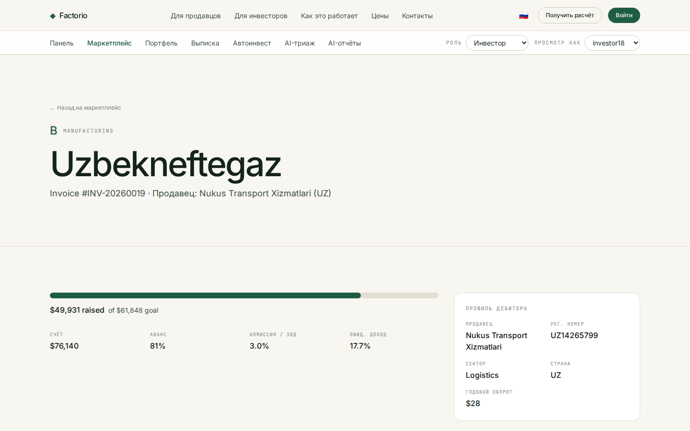
- В заголовке — должник, рейтинг риска, отрасль и номер счёта.
- Панель финансирования: собрано против цели, ставка аванса, комиссия и ожидаемая доходность.
- Блок профиля компании-должника: регистрационный номер, отрасль, страна и годовой оборот.
- Всё необходимое для решения о финансировании на одном экране.
Приложение · Портфель
Аналитическая панель
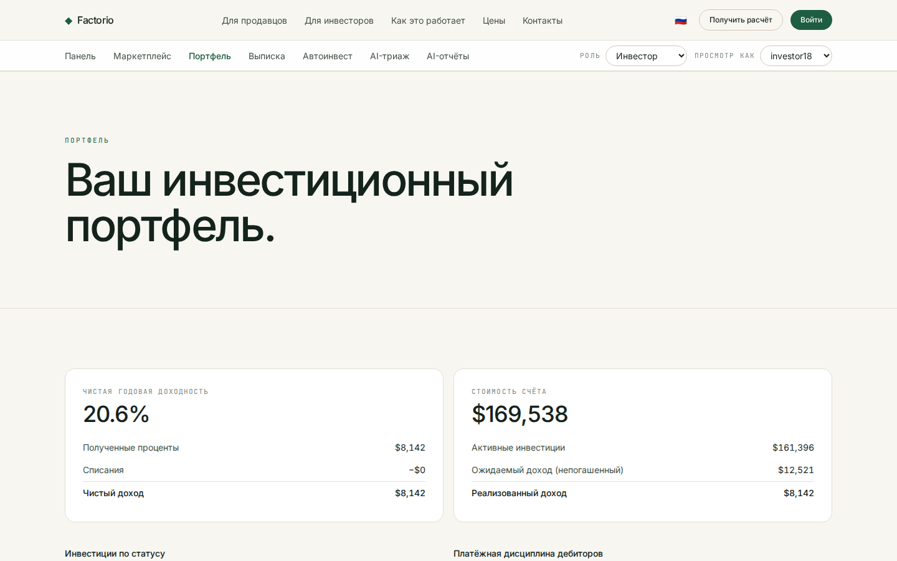
- Две главные панели: чистая годовая доходность (полученные проценты, списания, чистый доход) и стоимость счёта (активные вложения, ожидаемое к получению, реализованное).
- Таблица старения вложений распределяет активные позиции по сроку до / после погашения.
- Таблица платёжной дисциплины показывает, как фактически платили по закрытым счетам — раньше, в срок, с опозданием или списание.
- Таблица позиций перечисляет каждую инвестицию с реализованным доходом, датой расчёта, рейтингом и статусом.
Приложение · Выписка по счёту
Каждая операция, с фильтрами
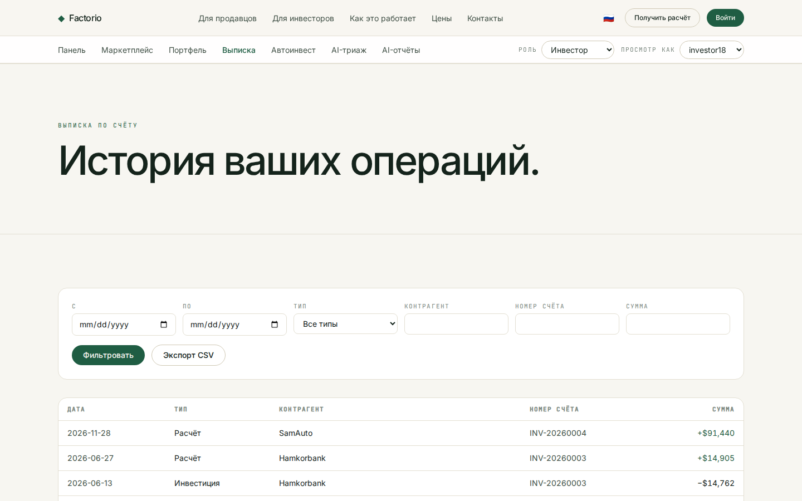
- Единый реестр движения средств: вложения (−) и поступления по расчётам (+).
- Фильтрация по периоду, типу, контрагенту, номеру счёта и минимальной сумме.
- Суммы со знаком в UZS, новые сверху.
- Экспорт в CSV в один клик для учёта и сверки.
Приложение · Авто-инвестирование
Задайте правила — инвестируйте автоматически
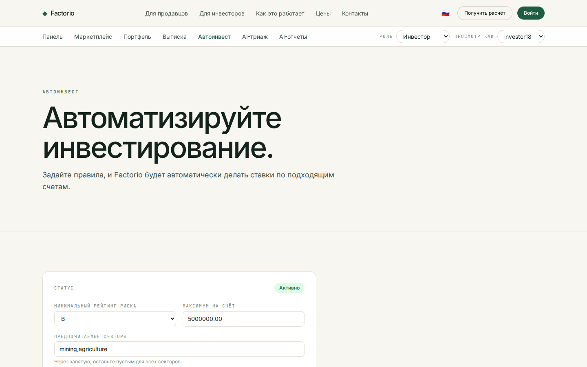
- Настройте автоматические заявки: минимальный рейтинг риска, максимальную сумму на счёт и предпочитаемые отрасли.
- Включайте и выключайте стратегию; статус показан сверху.
- Правила сохраняются для каждого инвестора и применяются к подходящим новым счетам.
- Создано по образцу автобиддера investly.co.
AI · Триаж заявок
Триаж счёта в чате

- Продавцы описывают счёт и должника обычными словами; ассистент запрашивает только недостающее.
- Он возвращает индикативный уровень риска (A–D), ставку аванса и список документов для банка — за секунды, а не за дни.
- На базе Grok (x.ai); все данные индикативны и подлежат проверке — окончательное решение не автоматизируется.
- Полностью трёхъязычный — ассистент отвечает на языке посетителя (английский, узбекский, русский).
AI · Отчёты по портфелю
Спросите свой портфель о чём угодно
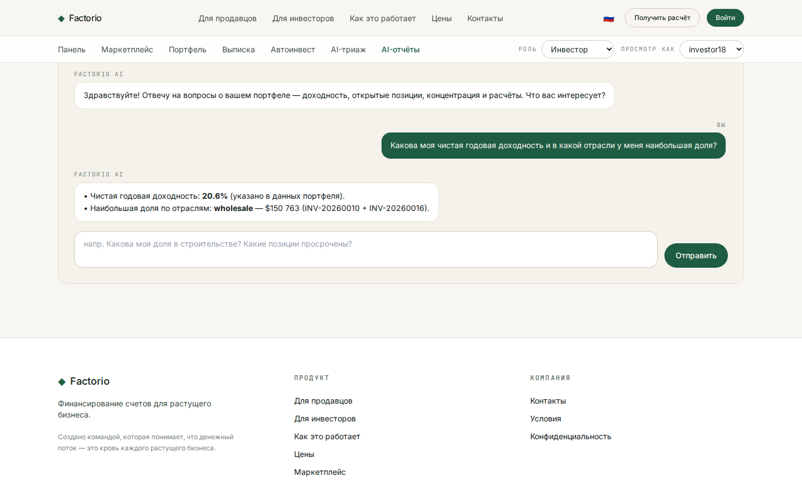
- Инвесторы задают вопросы на естественном языке — чистая доходность, доля по отраслям или должникам, просроченные позиции, ближайшие расчёты.
- Ответы основаны на реальных позициях инвестора — каждая цифра восходит к данным портфеля, а не выдумана.
- Конкретно и точно: приводятся реальные суммы и номера счетов, а при нехватке данных об этом честно сообщается.
- Разговорный слой поверх аналитической панели портфеля — отчётность по запросу, на языке инвестора.
Начало работы
Начните с Factorio
- Продавцам — подайте счёт и получите предложение за 1–3 рабочих дня.
- Инвесторам — изучайте маркетплейс, формируйте портфель, автоматизируйте через авто-инвестирование.
- Доступно на factorio.co.uk · hello@factorio.co.uk